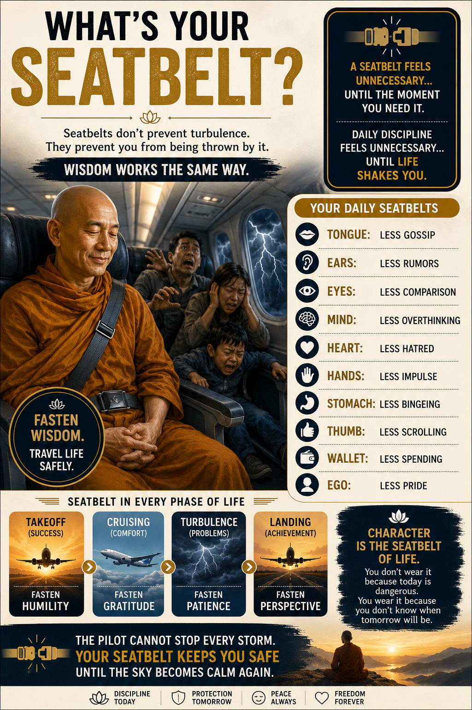
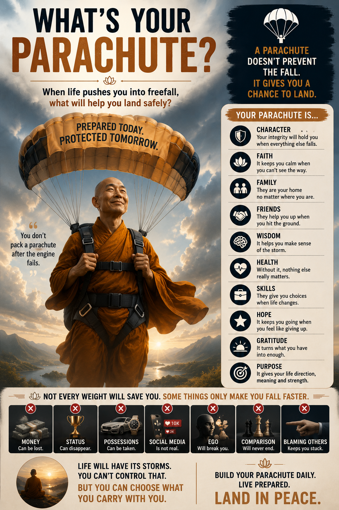

I've sat through turbulence with my seatbelt off — white-knuckled, blaming the sky. I've also hit freefall having packed nothing. Both times, the fall wasn't the problem. I was.
A seatbelt feels unnecessary —
until the moment you need it.
Discipline works the same way.
01The Seatbelt
It doesn't stop the storm. It stops you from being thrown by it.

Mine turned out to be boring things — the gossip I didn't repeat, the phone I put down before midnight, the ego I didn't feed in a meeting I could have won. None of it felt like discipline in the moment. It felt like nothing at all. That's exactly how a seatbelt is supposed to feel — right up until the moment it isn't.
Your Daily Seatbelts
Small restraints, worn in calm weather.
The belt changes. The habit doesn't.
But some days the plane doesn't shake.
It drops.
02The Parachute
It doesn't prevent the fall. It gives you a chance to land.

Mine wasn't the résumé I kept polished for a rainy day — that's the kind of weight gravity likes best. It was the people who still picked up the phone, the faith I hadn't touched in years, the version of me that had practiced getting back up long before I needed to. I hadn't packed it during the freefall. I'd been packing it for years without noticing.
Character
Holds when everything else lets go.
Faith
Whatever steadies you when you can't see the way — keep it close.
Family
Home, wherever you land.
Friends
The ones who help you up off the ground.
Health
Without it, nothing else gets carried.
Skills
Choices, when life changes the plan.
Hope
Keeps you going when the ground looks far.
Gratitude
Turns what you have into enough.
Purpose
Direction, meaning, and the strength both bring.
Not every weight will save you.
Some things only make you fall faster.
03Two Different Moments
One is for the shaking. The other is for the falling.
| Seatbelt | Parachute | |
|---|---|---|
| Protects against | Turbulence you didn't cause | A freefall you didn't choose |
| Worn | Always — before you need it | Packed years before the failure |
| Cost of skipping it | Thrown by a jolt you'd have survived | No second attempt at the ground |
| Built from | Tongue, ears, eyes, mind, hands, wallet, ego | Character, faith, family, skills, health, purpose |
The pilot cannot stop every storm. Character is the seatbelt. Preparation is the parachute. You don't wear either one because today looks dangerous — you wear them because you don't know which day will be the one that needs them.
Life will have its storms. You can't choose that. You can choose what you carry. So — what's yours?
04Further Reading
Teachers who packed their parachutes in public — so the rest of us could copy the folds.